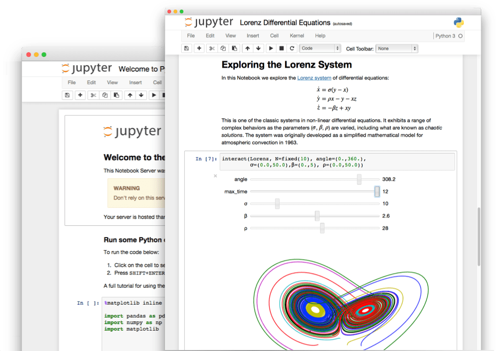

Vamos a instalar y configurar las herramientas necesarias para contar con el ecosistema de Jupyter en su computadora personal |  |
Felicidades! Has terminado otro laboratorio para la configuración de nuestra herramienta de trabajo. En el siguiente laboratorio vamos a instalar y configurar
Python en el dispositivo móvil.